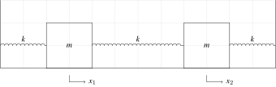

量子力学学习手记（一）
简介
- 这篇手记仅为自己学习记录而写。
- 虽然题目提到量子力学，但内容与量子力学关系不大，事实是这篇文章提到的某些概念以及方法在以后学习中十分普遍，因此有必要将其归为量子力学学习手记。
- 就当这是在打数学基础好了。
符号说明
| 符号 | 说明，以下符号表示的量是在 复数范围 内讨论的 |
|---|---|
| $\mid i\rangle$ | ket，也称列向量 |
| $\langle i\mid$ | bra，也称行向量 |
| $\langle i\mid j \rangle $ | inner product，求向量$\langle i\mid $与向量$\mid j\rangle$的内积 |
| $\mid i \rangle \langle j \mid $ | outer product，求向量$\mid i\rangle$与向量$\langle j\mid $的外积 |
| $\mid i\rangle ^\dagger$ | transpose conjugate，共轭转置，即向量每个元素取共轭复数后整体转置，$\mid i\rangle ^\dagger = \langle i^*\mid $ |
| $\Omega$, $\Lambda$ | 算子，或称算符，由函数组成的矩阵 |
| $\Omega^\dagger$ | 对 $\Omega$ 取共轭转置 |
题目重现
如图，两个振子组成一维耦合振子，两质点的质量均为$m$，所有弹簧劲度系数均为$k$，以右为正方向，两者位移分别为$x_1$、$x_2$。若两振子初始速度均为零，设两个振子在各自平衡位置时的位移为０，且初始位置未知，求这两个振子的位移-时间函数即$x_i(t)$。

题解
对两个振子分别分析，不妨设左边振子为1号，右边振子为2号。
对1号振子做受力分析：
$$ m \frac{\mathrm{d}^2 x_1}{\mathrm{d}t^2} = k(x_2 - x_1) - k{x_1} $$ 即
$$ m\ddot{x_1} = -2kx_1+kx_2 \notag $$
同理，2号振子满足
$$
m\ddot{x_2} = k{x_1} - 2kx_2 \notag
$$
问题化简为求微分方程组
$$
\begin{cases}
\ddot{x_1} = -\frac{2k}{m}x_1 + \frac{k}{m}x_2\
\ddot{x_2} = \frac{k}{m}x_1 - \frac{2k}{m}x_2
\end{cases}
$$
的解，写成矩阵形式即为
$$
\begin{bmatrix}
\ddot{x_1}\
\ddot{x_2}
\end{bmatrix} = \begin{bmatrix}
\frac{-2k}{m} & \frac{k}{m}\
\frac{k}{m} & \frac{-2k}{m}
\end{bmatrix} \begin{bmatrix}
x_1\
x_2
\end{bmatrix}
$$
现令$\Omega=\begin{bmatrix} \frac{-2k}{m} & \frac{k}{m}\ \frac{k}{m} & \frac{-2k}{m} \end{bmatrix} $
观察到 $\Omega$ 为Hermitian矩阵（$\Omega^\dagger = \Omega$，共轭转置后不变），
故设$\mid\mathrm{I}\rangle $和$\mid\mathrm{II}\rangle $分别为$\Omega$的两个本征矢（也叫特征向量）
有
$$
\begin{cases}
\Omega \mid \mathrm{I} \rangle = -\omega_\mathrm{I}^2 \mid \mathrm{I}\rangle\
\Omega \mid \mathrm{II} \rangle = -\omega_\mathrm{II}^2 \mid \mathrm{II}\rangle
\end{cases}
$$
这里$-\omega_\mathrm{I}^2$与$-\omega_\mathrm{II}^2$分别表示$\Omega$的两个本征值，因计算结果表示方便，这里用$-\omega_i^2$表示，而不是$\omega_i$。
求出$-\omega_\mathrm{I}^2$与$-\omega_\mathrm{II}^2$分别为$\frac{k}{m} \mp \frac{2k}{m}$。不妨设$-\omega_\mathrm{I}^2＝-\frac{k}{m}$，$-\omega_\mathrm{II}^2＝-\frac{3k}{m}$。
已知本征值，可以求出本征矢为
$$
\begin{cases}
\mid \mathrm{I}\rangle = \frac{1}{\sqrt{2}} \begin{bmatrix} 1 \ 1 \end{bmatrix} & \omega_\mathrm{I}=\sqrt{\frac{k}{m}} \
\mid \mathrm{II} \rangle = \frac{1}{\sqrt{2}} \begin{bmatrix} 1 \ -1 \end{bmatrix} & \omega_\mathrm{II}=\sqrt{\frac{3k}{m}}
\end{cases}
$$
可以看出$\mid \mathrm{I} \rangle$与$\mid \mathrm{II}\rangle$相互正交（内积为０）。
因此$x(t)= \mid \mathrm{I}\rangle x_1(t) +\mid \mathrm{II}\rangle x_2(t)$。
到这里，上面的步骤相当于对空间基矢进行了变换，原先的基矢为
$x_1(t)$对应$\mid 1 \rangle = \begin{bmatrix} 1 \ 0 \end{bmatrix}$，$x_2(t)$对应$\mid 2 \rangle = \begin{bmatrix} 0 \ 1 \end{bmatrix}$，现变换为$x_\mathrm{I}$对应$\mid \mathrm{I} \rangle =\frac{1}{\sqrt{2}} \begin{bmatrix} 1 \ 1 \end{bmatrix}$，$x_\mathrm{II}$对应$\mid \mathrm{II} \rangle =\frac{1}{\sqrt{2}} \begin{bmatrix} 1 \ -1 \end{bmatrix}$。这样做有什么好处呢？好处马上就会呈现。
此时$\Omega$可以对角化为
$$
\Omega =
\begin{bmatrix}
-\omega_\mathrm{I}^2 & 0 \
0 & -\omega_\mathrm{II}^2
\end{bmatrix}
$$
故原方程式可以化为
$$
\begin{bmatrix}
\ddot{x_\mathrm{I}} \
\ddot{x_\mathrm{II}}
\end{bmatrix}
\begin{bmatrix}
-\omega_\mathrm{I}^2 & 0 \
0 & -\omega_\mathrm{II}^2
\end{bmatrix}
\begin{bmatrix}
x_\mathrm{I} \
x_\mathrm{II}
\end{bmatrix}
\begin{bmatrix}
-\omega_\mathrm{I}^2 x_\mathrm{I} \
-\omega_\mathrm{II}^2 x_\mathrm{II}
\end{bmatrix}
$$
此时分别解$\ddot{x_\mathrm{I}}$与$\ddot{x_\mathrm{II}}$（两个二阶线性微分方程$\ddot{x_i} + \omega_i^2 x_i = 0$，并且$\dot{x_i}$=0），即可得到$x_i (t),\quad i=\mathrm{I,II}$的解，解为
$$ x_i(t) = x_i(0) \cos\omega_i t, \quad i=\mathrm{I,II} $$
此时我们离胜利已经很近了——已经得到
$$
\begin{aligned}
\mid x(t) \rangle & = \mid \mathrm{I} \rangle x_\mathrm{I}(0)\cos\omega_\mathrm{I}t + \mid \mathrm{II} \rangle x_\mathrm{II}(0)\cos\omega_\mathrm{II}t \
& = \mid \mathrm{I}\rangle\langle\mathrm{I}\mid x(0)\rangle \cos\omega_\mathrm{I}t + \mid \mathrm{II}\rangle\langle\mathrm{II}\mid x(0)\rangle \cos\omega_\mathrm{II}t
\end{aligned}
$$
式中
$$
\begin{aligned}
\langle \mathrm{I} \mid x(0) \rangle &= \frac{1}{\sqrt{2}} \begin{bmatrix} 1 & 1 \end{bmatrix} \begin{bmatrix} x_1(0) \ x_2(0) \end{bmatrix} = \frac{x_1(0)+x_2(0)}{\sqrt{2}} \
\langle \mathrm{II} \mid x(0) \rangle &= \frac{1}{\sqrt{2}} \begin{bmatrix} 1& -1 \end{bmatrix} \begin{bmatrix} x_1(0) \ x_2(0) \end{bmatrix} = \frac{x_1(0) - x_2(0)}{\sqrt{2}}
\end{aligned}
$$
$\therefore \mid x(t)\rangle = \mid \mathrm{I}\rangle \frac{x_1(0)+x_2(0)}{\sqrt{2}} + \mid \mathrm{II}\rangle \frac{x_1(0) - x_2(0)}{\sqrt{2}}$
我们需要将$\mid \mathrm{I}\rangle$和$\mid \mathrm{II}\rangle$还原为$\mid 1\rangle$和$\mid 2\rangle$，这个操作可以通过投影 `projection` 来实现：
$$
\begin{aligned}
x_1(t) =& \langle 1 \mid x(t)\rangle \
=& \langle 1 \mid \mathrm{I}\rangle \frac{x_1(0) + x_2(0)}{\sqrt{2}}\cos\omega_\mathrm{I}t + \langle 1 \mid \mathrm{II}\rangle \frac{x_1(0) - x_2(0)}{\sqrt{2}}\cos\omega_\mathrm{II}t \
=& \frac{x_1(0) + x_2(0)}{2}\cos\left(\sqrt{\frac{k}{m}}t\right) + \frac{x_1(0) - x_2(0)}{2}\cos\left(\sqrt{\frac{3k}{m}}t\right)
\end{aligned}
$$
同理
$$
x_2(t)= \frac{x_1(0) + x_2(0)}{2}\cos\left(\sqrt{\frac{k}{m}}t\right) - \frac{x_1(0) - x_2(0)}{2}\cos\left(\sqrt{\frac{3k}{m}}t\right)
$$
写成矩阵形式即为
$$
\begin{bmatrix} x_1(t) \ x_2(t) \end{bmatrix}
\begin{bmatrix}
\frac{\cos\left(\sqrt{\frac{k}{m}}t\right) + \cos\left(\sqrt{\frac{3k}{m}}t\right) }{2} & \frac{\cos\left(\sqrt{\frac{k}{m}}t\right) - \cos\left(\sqrt{\frac{3k}{m}}t\right) }{2} \
\frac{\cos\left(\sqrt{\frac{k}{m}}t\right) - \cos\left(\sqrt{\frac{3k}{m}}t\right) }{2} & \frac{\cos\left(\sqrt{\frac{k}{m}}t\right) + \cos\left(\sqrt{\frac{3k}{m}}t\right) }{2}
\end{bmatrix}
\begin{bmatrix} x_1(0) \ x_2(0) \end{bmatrix}
$$
此时，只要给出$\mid x(0)\rangle$即可得到整个耦合振子系统的运动方程。结束战斗。
收获总结
在Shankar上看到这道题的题解时，起初是不怎么明白的，直到在写这篇手记的过程中，我才体会到这样解的用意：
- 这是一个耦合系统，即两个微分方程分别含有对方的变量。
- 求出$\mid \mathrm{I}\rangle$与$\mid \mathrm{II}\rangle$的过程就是在对原有的线性空间基矢（或称基底）做变换，变换的目的是为了将微分方程组转化为非耦合的方程组。这里，个人以为，说的通俗一些，就是换元——在高等数学的某些求解不定积分时也会用到这种方法。
- 求算子$\Omega$的本征值就是为了将其对角化（对角化后只有对角线上元素不为零），做矩阵乘法运算就可以得到非耦合的方程组，然后问题就变成了熟悉的二阶线性微分方程，之后求解需要用到欧拉公式，这里不赘述。
- 用矩阵表示大块方程组真的很方便！
- Ti$k$Z很好用！
虽然说上面的题解基本是翻译过来的，但也是有一些收获的，权当 拾人牙慧吧 。
- 原文作者：Ionizing
- 原文链接：https://ionizing.page/post/Quantum-Physics-Learning-Log-1/
- 版权声明：本作品采用知识共享署名-非商业性使用-禁止演绎 4.0 国际许可协议进行许可，非商业转载请注明出处（作者，原文链接），商业转载请联系作者获得授权。